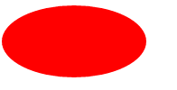
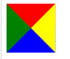
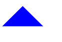
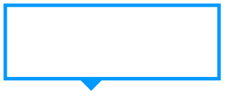
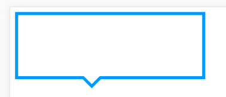
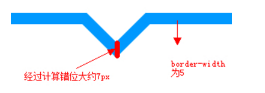
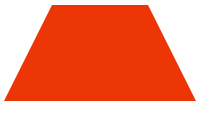
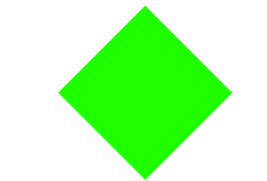

分享人：陈红远
#oval { width: 200px; height: 100px;
background: red;
-moz-border-radius: 100px / 50px;
-webkit-border-radius: 100px / 50px;
border-radius: 100px / 50px;
}
border-radius是一种缩写方法。如果“/”前后的值都存在， 那么“/”前面的值设置其水平半径，“/”后面值设置其垂直半径

#triangle {
height: 0;
width: 0;
border-color: #ff0000 #ffff00 #0000ff #008000;
border-style: solid;
border-width: 40px 40px 40px 40px;
}

四个三角形合成一个正方形，大小为80x80，如果我们只想保留其中某个三角形的话，将其它的设置为透明即可。另外，在制作三角形时，宽度和高度要设置为0。
比如向上的三角形。其他三个三角形设置为透明的就行
#triangle-up {
height: 0;
width: 0;
border-color: transparent transparent #0000ff transparent;
border-style: solid;
border-width: 40px 40px 40px 40px;
}

而我们实际写三角行的时候可以直接这样写，比如向上的三角形就不用设置border-top
#triangle-up {
height: 0;
width: 0;
border-left: 40px solid transparent;
border-right: 40px solid transparent;
border-bottom: 40px solid #0000ff;
}
先给一个border为5px的框，然后给一个向下的三角形，三角形的高为20px，所以设置bottom:-20px，让他向下移动20px，效果如图
.tag{ width:300px; height:100px; border:5px solid #09F; position:relative; background-color:#FFF;}
.tag em{display:block; position:absolute; bottom:-20px; left:100px;border-left: 20px solid transparent;
border-right: 20px solid transparent;
border-top: 20px solid #09F;
font-size:0; line-height:0;}

再加一个白色的三角形，他在上一个三角形上方大概7px的位置，效果如图
.tag span{
display:block;
position:absolute; bottom:-13px; left:100px;
border-left: 20px solid transparent;
border-right: 20px solid transparent;
border-top: 20px solid #FFF;
font-size:0; line-height:0;
}

两个三角形的距离为什么是7px呢
两个小三角bottom的差值理论上应该是border-width的平方根

#trapezium {
height: 0;
width: 120px;
border-bottom: 120px solid #ec3504;
border-left: 60px solid transparent;
border-right: 60px solid transparent;
}

梯形是三角形的一个变体，设置CSS梯形时，左右两条边设置为相等，并且给它设置一个宽度。
#diamond {
width: 120px;
height: 120px;
background: #1eff00;
transform: rotate(-45deg);
margin: 60px 0 10px 310px;
}

制作菱形的方法有很多种。这里使用的是transform属性和rotate相结合，使两个正反三角形上下显示。transform: rotate(-45deg);表示逆时针旋转45度
#parallelogram {
width: 160px;
height: 100px;
background: #8734f7;
transform: skew(30deg);
margin: 60px 0 10px 310px;
}
平行四边形的制作方式是使用transform属性使长方形倾斜一个角度。skew一个参数时表示水平方向倾斜，两个参数时，第二个表示垂直方向倾斜
参考一：Baidu
参考二：Baidu
感谢大家观看
BY : 陈红远